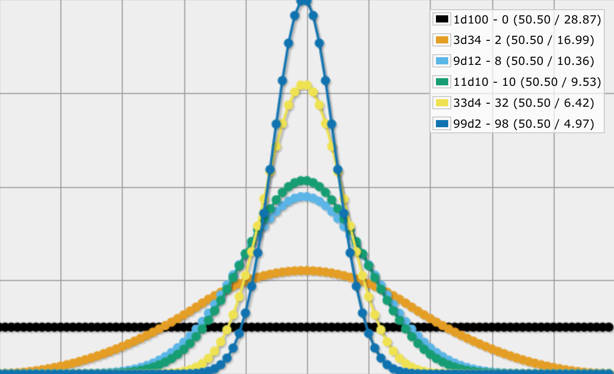
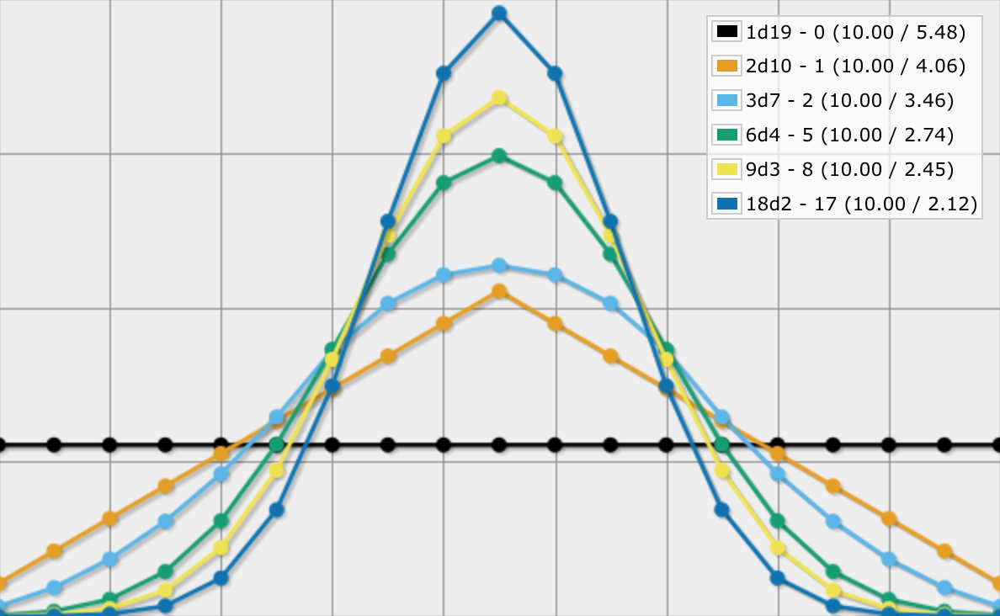
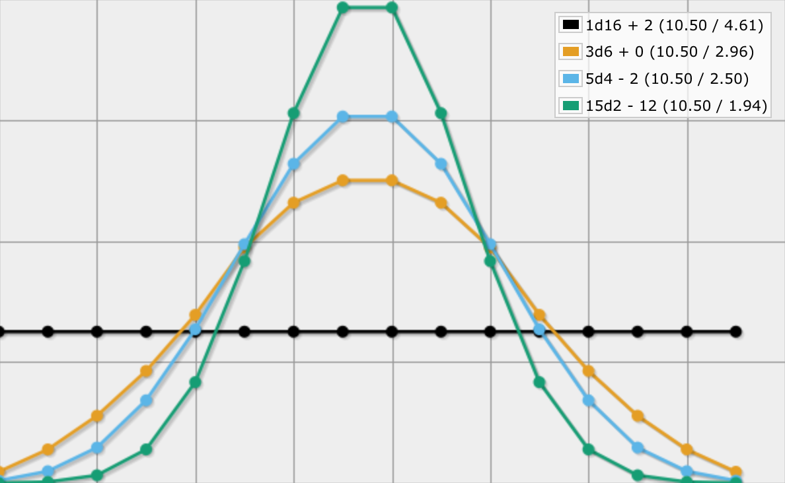
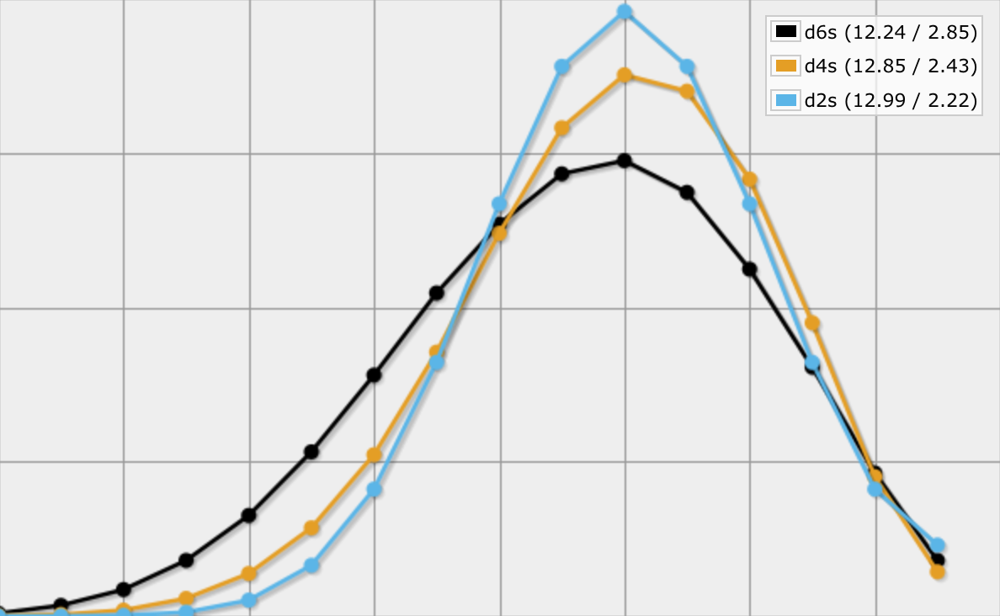

Rolling Within a Range
When you roll 1d20, you'll get get a number between 1 and 20, inclusive. When you roll and sum 3d6, you get a number in the 3–18 range. In general, XdY produces numbers in the X‐XY range. This is straightforward. But what about the other way around? Given a number range, which dice can produce it?
Dice for 1–100
A popular number range is between 1 and 100, inclusive. Which homogeneous dice sums can we use for this? The obvious first answer is 1d100, which gives us a flat distribution. Another answer that might be tempting is 10d10, but that doesn't work. 10d10 produces numbers in the 10–100 range. It misses the first nine numbers.
What about 11d10? That gives us 11–110, which contains 100 numbers, but starts at 11. We can turn that into 1–100 by subtracting 10 from it. So 11d10 - 10 works. We could try this for all dice that have up to 100 faces, but there should be a pattern.
In general, we have `Xbbb"d"Y - Z`. When `X` is 1 then `Y` is 100 and `Z` is 0. We also found that when `X` is 11 then `Y` is 10 and `Z` is also 10.
Each time we add a die, we have to subtract 1 extra to keep the range from shifting. So Z is always one less than X, which means that we can eliminate it. Our formula thus becomes `Xbbb"d"Y - X + 1`.
To fix the end of the range at 100, we have to make sure that `XY - X + 1 = 100`. Let's rewrite this relationship so we isolate `Y`.
`XY - X = 99`
`XY = X + 99`
`Y = (X + 99) / X`
We can now eliminate `Y` from our function, arriving at `Xbbb"d"((X + 99) / X) - X + 1`.
What's left is to find all possible values for `X`. While it's technically possible for `X` to be negative, only the positive answers fit our criteria. Note that `X` must divide 99 plus itself. Because a positive number can always divide itself, this means that `X` is all possible divisors of 99. They are 1, 3, 9, 11, 33, and 99. If you're not sure about that, you can ask Wolfram|Alpha.
Using the six divisors of 99 as `X` for our formula, we end up with six dice expressions: 1d100, 3d34 − 2, 9d12 − 8, 11d10 − 10, 33d4 − 32, and 99d2 − 98. We can also put the formula in an AnyDice program.
loop X over {1,3,9,11,33,99} {
Y: (X + 99) / X
Z: X - 1
output XdY - Z named "[X]d[Y] - [Z]"
}

General Formula for 1–N
We can use the same approach to find dice expressions for ranges with other maxima, by replacing 100 with `N`. Then we have to satisfy `XY - X + 1 = N`, which leads to the general formula `Xbbb"d"((X + N - 1) / X) - X + 1`. In this case, `X` has to be a divisor of `N - 1`.
Because of the divisor constraint, many maxima end up with only a few possible expressions. For example, 1–20 only has 1d20 and 19d2 - 18, while 1–19 has 1d19, 2d10 - 1, 3d7 - 2, 6d4 - 5, 9d3 - 8, and 18d2 - 17.
Instead of figuring out the divisors yourself, you can leave that up to AnyDice as well.
N: 19
loop X over {1..N - 1} {
if ((N - 1) / X) * X = N - 1 {
Y: (X + N - 1) / X
Z: X - 1
output XdY - Z named "[X]d[Y] - [Z]"
}
}

General Formula for M–N
We don't always want to start at 1. For example, 3d6 produces numbers in the 3–18 range. What other homogeneous dice sums can produce that same range?
The 3–18 range is really just 1–16, plus 2. So we can use our existing formula with `N = 16` and add two at the end. We can incorporate this conversion into our formula by using `M` instead of 1, so we end up with `Xbbb"d"((X + N - M) / X) - X + M`, where `X` is a divisor of `N - M`. Here is a handy AnyDice program for that.
M: 3
N: 18
loop X over {1..N - M} {
if ((N - M) / X) * X = N - M {
Y: (X + N - M) / X
Z: X - M
if Z > 0 {
output XdY - Z named "[X]d[Y] - [Z]"
}
else {
Z: -Z
output XdY + Z named "[X]d[Y] + [Z]"
}
}
}

Once you know which dice work, you can get creative. For example, using d4s or d2s as alternatives for 4d6 drop lowest.
output [highest 3 of 4d6] named "d6s" output [highest 5 of 7d4] - 2 named "d4s" output [highest 15 of 20d2] - 12 named "d2s"
